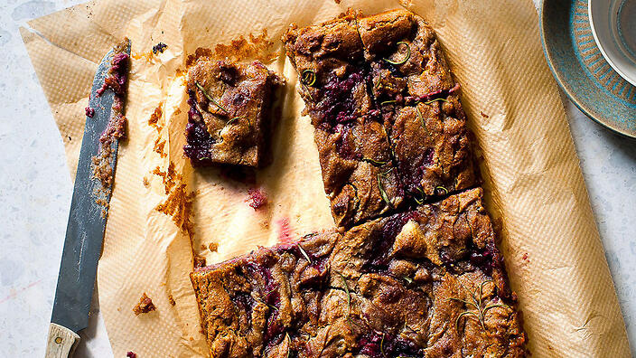

White chocolate, blackberry and rosemary mud slice

“This slice was inspired by the lovely Sollá, who runs a chain of vegetarian and raw food restaurants in Iceland and who helped me appreciate the potential of vegetarian and raw cooking through her delicious dishes."
SERVES - 16 pieces
PREPARATION - 15 mins
COOKING - 55 mins
SKILL LEVEL - EASY
It was a pleasant surprise to see the popularity of health and raw foods in Reykjavik, with almost every supermarket stocking an impressive range of products. Indeed, with her five restaurants Sollá has had more success in Reykjavik than the famous golden arches, who were forced to close their doors in 2009. Sollá’s original recipe calls for the use of black beans and cacao, which I have adapted here to reflect new Nordic cuisine’s penchant for white chocolate.
Ingredients:
- 75 g(2½ oz/¾ cup) walnut halves
- 40 g(1½ oz/⅓ cup) chia seeds
- 400 g(14 oz) tinned butter beans (giant white beans), rinsed and drained
- 250 g(9 oz) granulated sugar
- 80 ml(2½ fl oz/⅓ cup) coconut oil, melted
- 100 g(3½ oz/1 cup) ground almonds (almond meal)
- 1 tspbaking powder
- 1 tspnatural vanilla extract
- ¼ tspsea salt flakes
- 150 g(5½ oz) white chocolate, broken into 1 cm (½ in pieces)
- 2rosemary sprigs, leaves stripped
- 130 g(4½ oz) frozen blackberries
instructions
- Preheat the oven to 180°C (350°F/Gas 4). Lightly grease a 28 cm x 22 cm (11 in x 8½ in) baking tin with butter.
- Arrange the walnut halves on a baking tray in an even layer, transfer to the oven and bake for 5 minutes until lightly toasted. Leave to cool, then chop into roughly 1 cm (½ in) pieces. Leave the oven on.
- Put the chia seeds in a small blender or spice grinder and whiz together for 20 seconds to form a powder. Tip the ground chia into a bowl, pour over 150 ml (5 fl oz) of water and stir together to form a paste. Set aside.
- Place the butter beans in a food processor and blend together until smooth, then add the chia paste, sugar, coconut oil, ground almonds, baking powder, vanilla extract and sea salt and blitz together to form a smooth batter.
- Add the chocolate, half the rosemary, the blackberries and walnuts to the food processor and pulse for 2–3 seconds to combine, then pour the batter into the prepared baking tin. Scatter over the remaining rosemary leaves and bake for 50 minutes, or until it is just set in the middle and the edges are raised and cracked.
- Remove from the oven and allow to cool, then cut into squares and serve, or transfer to an airtight container and store in the refrigerator for up to 5 days (they taste even better the next day).
This recipe was first seen HERE